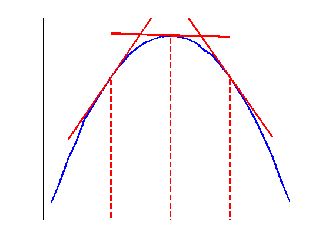

function arsEnvelope
x = randn([1,1000000]);
[n, xout] = hist(x, -1.5:0.1:1.5);
n(1) = []; xout(1) = [];
n(end) = []; xout(end) = [];
n = n / max(n);
n = log(n);
figure(1); clf; hold on;
plot(xout, n, '-b', 'LineWidth', 3);
x1 = -0.7;
ind1 = find(xout == x1);
ratio1 = (n(ind1+1) - n(ind1-1)) / (xout(ind1+1) - xout(ind1-1));
plot([x1 - 0.5, x1 + 0.5], [n(ind1)-0.5*ratio1, n(ind1)+0.5*ratio1], '-r', 'LineWidth', 3);
plot([x1, x1], [n(ind1),min(n)-0.1], '--r', 'LineWidth', 3);
x2 = 0;
ind2 = find(xout == x2);
ratio2 = (n(ind2+1) - n(ind2-1)) / (xout(ind2+1) - xout(ind2-1));
plot([x2 - 0.7, x2 + 0.7], [n(ind2)-0.7*ratio2, n(ind2)+0.7*ratio2], '-r', 'LineWidth', 3);
plot([x2, x2], [n(ind2),min(n)-0.1], '--r', 'LineWidth', 3);
x3 = 0.7;
ind3 = find(xout == x3);
ratio3 = (n(ind3+1) - n(ind3-1)) / (xout(ind3+1) - xout(ind3-1));
plot([x3 - 0.5, x3 + 0.5], [n(ind3)-0.5*ratio3, n(ind3)+0.5*ratio3], '-r', 'LineWidth', 3);
plot([x3, x3], [n(ind3),min(n)-0.1], '--r', 'LineWidth', 3);
xlim([-1.5,1.5]);
ylim([min(n)-0.1, max(n)+0.1]);
set(gca, 'XTick', []);
set(gca, 'YTick', []);
hold off;
end
